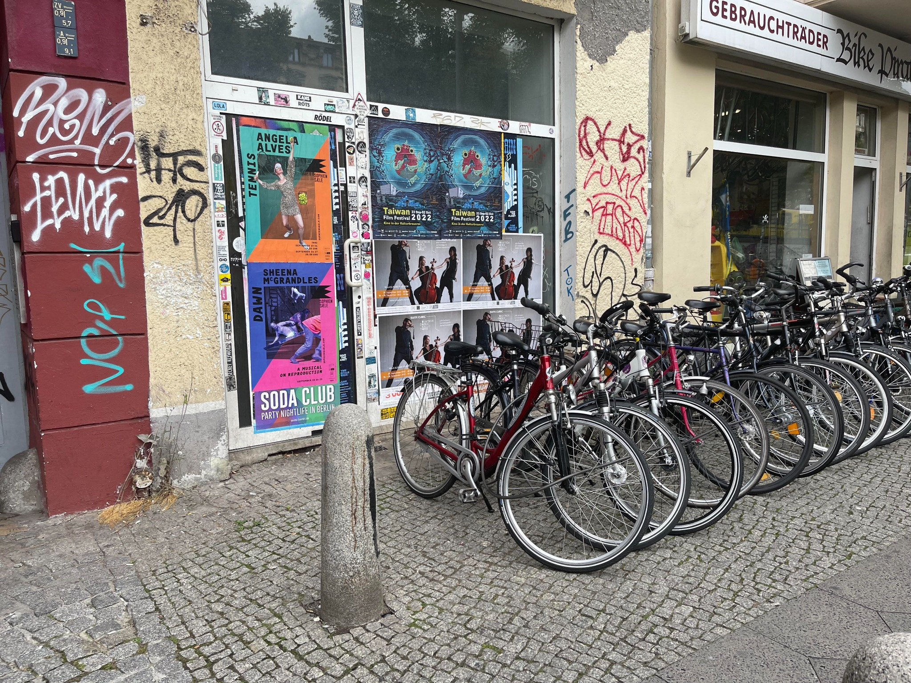
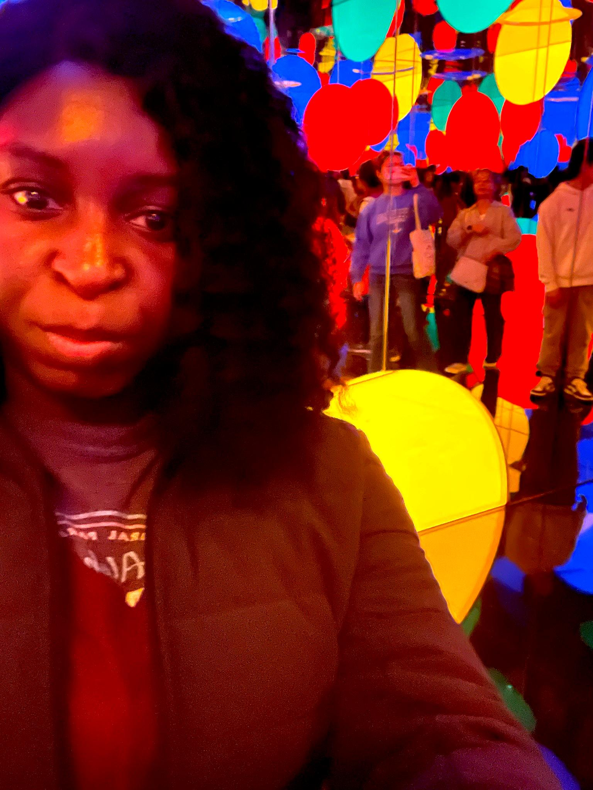
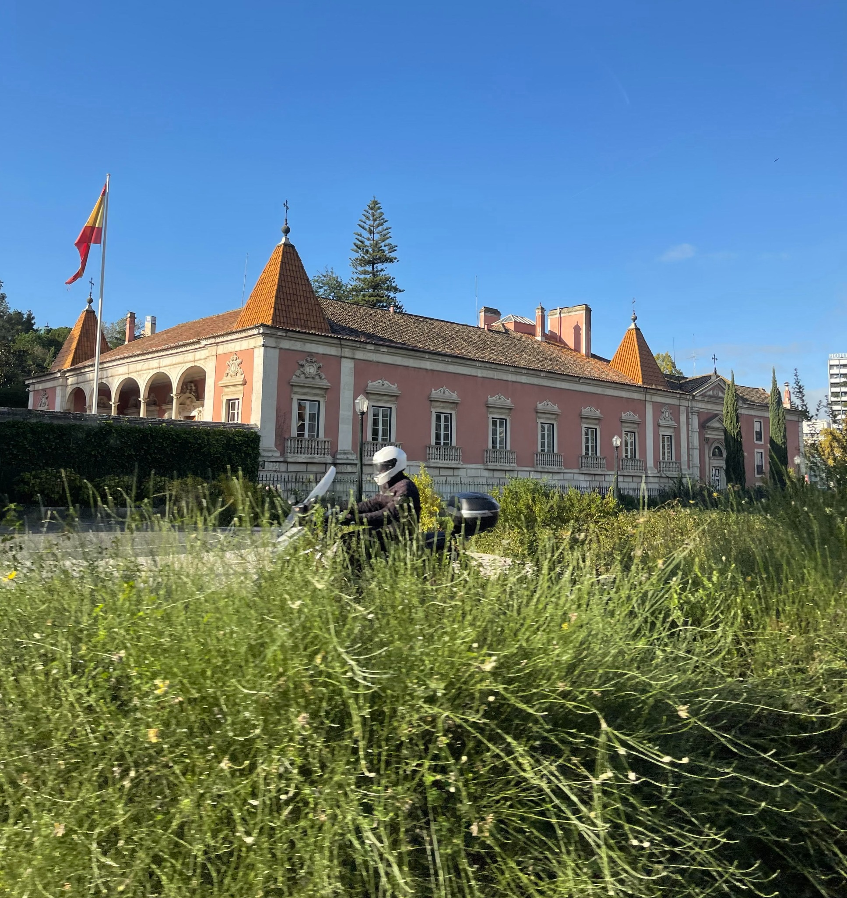

Exploring, Creating, Inspiring. Welcome to my world.
Every photo, design, or idea is a piece of me. Tap or click to explore.

Berlin Street Art
Self Portrait
Lisbon VibesA glimpse of light, color, and quiet strength — from winding alleyways to majestic pink palaces. Lisbon, you changed me.
Read more →How I see fashion, light, and energy blending into a quiet statement of joy and resistance. Featuring Berlin's streets and club posters.
Read more →Living between cities, between vibes, between versions of myself — and why that's the most honest thing I've ever done.
Read more →